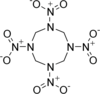

hmx

Has synonym(s): octogen
Definition: HMX, also called octogen, is a powerful and relatively insensitive nitroamine high explosive, chemically related to RDX. Like RDX, the compound's name is the subject of much speculation, having been variously listed as High Melting Explosive, Her Majesty's Explosive, High-velocity Military Explosive, or High-Molecular-weight RDX.The molecular structure of HMX consists of an eight-membered ring of alternating carbon and nitrogen atoms, with a nitro group attached to each nitrogen atom. Because of its high molecular weight, it is one of the most potent chemical explosives manufactured, although a number of newer ones, including HNIW and ONC, are more powerful.
Source: Wikipedia
Wikipedia Page (Something wrong with this association? Let us know.)
Wikidata Page (Something wrong with this association? Let us know.)